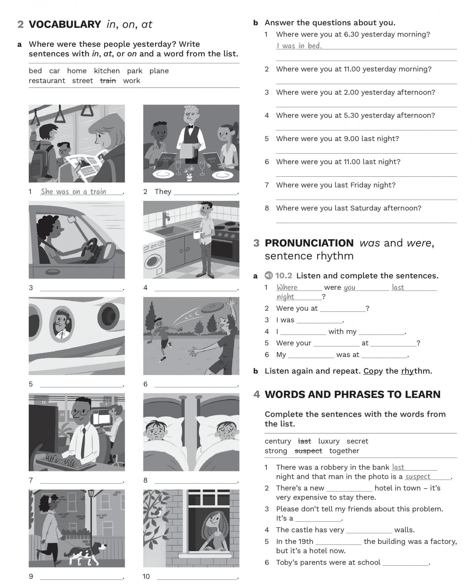

Overview · two lessons
Welcome! Let’s solve the mystery.
Warm-up → story → grammar → core practice → Kevin → place phrases → conversation model → role play → exit ticket.
Use sentences 1–5 and conversations 1–2 on screen 6. Leave the sections marked Extra practice for later.
Return to the extra practice, then use Maisie’s video, new partner questions, role play round 2 and Buildings with a past.
Finish with the exit ticket again. Move on when you can ask and answer without reading.
Lesson 1 focuses on the core route; use only the conversation model and two partner questions in Sentence rhythm. On Lesson 2, revisit the extra practice from screens 6–7, add the Maisie video and the remaining partner prompts, swap roles, and use the hotel video. Assign Homework Part 1 after Lesson 1 and Part 2 after Lesson 2. Adjust the pace to the learner.
In this lesson, you'll learn how to talk about where people were in the past. You'll also learn the past simple of be (was/were) with useful place phrases such as at home, in bed, on a bus.
| Subject | Positive (+) | Negative (−) | Question (?) |
|---|---|---|---|
| I / he / she / it | was | wasn't (was not) | Was I/he/she/it…? |
| you / we / they | were | weren't (were not) | Were you/we/they…? |
| Preposition | Use | Examples |
|---|---|---|
| at | specific times | at 3 o'clock, at night, at the weekend |
| on | days and dates | on Monday, on 5th March, on my birthday |
| in | months, years, seasons, parts of the day | in July, in 2024, in the morning, in summer |
Lesson 1 · core
Where are you?
I am at home.
Where were you?
I was at work.
Listen to your teacher’s example. Then answer two questions. You can use the phrases below.
I’m ___ now. Yesterday at eight, I was ___.
Teacher: accept a short modelled answer here. Return to these questions after the speaking practice.
Lesson 1 · core
These four words help you understand the story. Match each word to its meaning. Open a word card if you need help.
He asks questions.
детектив, сыщик
The police ask him questions.
подозреваемый
There was a robbery at the bank.
ограбление
She was at home alone.
один, без других людей
Use these words to follow the story. For speaking, focus on was / were and place phrases.
Lesson 1 · core
Last night there was a robbery at a bank. Jason Brown is a suspect. Which person is Jason? Which person is the detective?
Listen once without opening the dialogue. Does Jason change his story?
Listen again. Complete the missing words. Compare answers, then check.
First, Jason says, “I was at ___.” Then he says, “I was in a ___.” Was he alone?
Lesson 1 · core
Compare three forms with the same subject. What changes in a negative sentence? What changes in a question?
You were at home.
You weren’t at home.
Were you at home?
| Subject | Positive | Negative |
|---|---|---|
| I / he / she / it | was | wasn’t |
| you / we / they | were | weren’t |
Question: Were you at home? / Was she tired?
Short answer: Yes, I was. / No, she wasn’t.
Use yesterday, last night, last week without “the”.
In the story, “There was a robbery” means that a robbery happened.
Treat “there was” as a phrase for understanding the story. Keep separate practice of there was / there were for another lesson.
Lesson 1 · core + extra practice
Use all the cues. + positive · − negative · ? question. Example: she / at home / yesterday → She was at home yesterday.
Use was, wasn’t, were or weren’t.
Choose one conversation and act it out. Then change one place or one name and repeat it.
Teacher cue: “you / at home / yesterday?” → student asks a full question. Partner answers.
Lesson 1 · Kevin + optional drill
Listen to a present sentence. Pause at the sound, say the past form, then play the model answer. Write your answers afterwards.
She’s a teacher. → She was a teacher.
Kevin is Jason’s friend. Listen once for the place at seven o’clock.
Read the information first. Listen again and fill the gaps.
Which detail in Kevin’s story is difficult to believe? Compare his answer with what the detective said earlier. Explain your idea before opening a hint.
Think about Jason’s wife. Where does each speaker say she was?
The detective says Jason’s wife was at home alone. Kevin says she was with them. Where was she?
The detective’s information and Kevin’s claim about Jason’s wife do not agree. Kevin puts her in the pub with them; the detective says she was at home alone.
D: Interview with Kevin Smith at eight p.m. on Tuesday the fourteenth of November. Are you Kevin Smith?
K: Yes, I am.
D: What do you do, Kevin?
K: I’m a taxi driver.
D: And where do you live?
K: At fourteen Market Street.
D: Do you know the suspect, Jason Brown?
K: Yes, I know him. He’s my friend. We were at school together.
D: Where were you yesterday afternoon at five o’clock?
K: Yesterday at five o’clock… I was in my taxi. I was in my taxi all afternoon.
D: And at seven o’clock? Where were you then?
K: I was in a pub. The Black Horse.
D: Where is it, exactly?
K: In South Street. Near the station.
D: Were you alone?
K: No, I was with Jason.
D: Were you only with Jason?
K: Er, no. My wife was there. And Jason’s wife.
D: Jason’s wife? She was with you?
K: Er, yes.
D: Are you sure?
Lesson 1 · core
The next day Jason and Kevin were in prison. Where was Jason’s wife? Listen to the sound clues.
at home
at work
at school
at university
in London
in bed
in the kitchen
in a car
on a bus
on a train
on a plane
We can say in a restaurant or at a restaurant, depending on the meaning. Both can answer “Where were you?”
at seven · on Monday · in the morning
Say two true sentences: “Yesterday at seven, I was ___.” / “On Saturday, I was ___.”
Lesson 2 · consolidation
Maisie took photos of the places she was yesterday. Watch and pause when a small circle appears. Guess the place before the picture is complete.
Video unavailable. Keep the assets folder beside the lesson.
Partner A chooses a picture number. Partner B answers: “Where was she?” — “She was ___.” Swap roles.
Close the answers. Remember three places and say them aloud.
Pause at each circle, starting around ten seconds. Elicit a full sentence with the right preposition, then continue to check. At the final grid, pause and use it for pair questions. Use the end of this particular file rather than a timestamp from another edition.
Lesson 1 model · Lesson 2 partner practice
Listen once. Then pause after each line and repeat. The bold words carry the main beats.
AWhere were you at seven o’clock yesterday morning?
BI was at home.
AWere you in bed?
BYes, I was.
AWhere were you at ten o’clock?
BI was in a café with friends.
AWere you there all morning?
BNo, we weren’t. We were there for an hour.
Partner A uses the green prompts; partner B uses the blue prompts. Answer about your real day. Practise making each question first, then ask without reading.
Were you alone? · Who were you with? · Were you there all morning?
Now tell the class two things about your partner: “At seven yesterday morning, Alex was ___.”
In positive sentences, unstressed was is often /wəz/ and were is often /wə/. In short answers use strong /wɒz/ and /wɜː/: “Yes, I was.” Negatives are stressed: “No, we weren’t.” Yes/no questions can also use a strong form.
First play the whole conversation for meaning. Replay line by line for repetition. Model the first two partner questions. After pair work, ask learners to report one sentence about their partner. Focus on clear stress and intelligibility; don’t score pronunciation automatically.
Lesson 1 round 1 · Lesson 2 round 2
There was a robbery at a jewellery shop last Saturday at seven in the evening. Ask the suspect about that time.
Where were you at seven?
Were you alone?
Who were you with?
Were you at home at seven?
You are Alex. At six you were at home alone. At seven you were in a café with Sam. First say: “At seven I was at home alone.” When asked again about the time or your friend, say: “At seven I was in a café with Sam.” Don’t show this card to the detective.
Detective: ask at least four questions. Ask about the same time again. Which answers do not agree?
Use fewer prompts. Prepare a new place, time and person. Include one contradiction about the same time. Your partner must find it.
You are Jordan. At eight you were on a train with Lee. First say you were at the cinema alone at eight. Later say you were on a train with Lee at eight. Answer other questions simply; let the detective notice the contradiction.
“First you said ___, but then you said ___.”
Teacher: give feedback on the message first, then one useful correction. Repeat the corrected question or answer once.
Lesson 2 · video extension
First watch: where are the buildings? What are they today? What were they in 1808?
Video unavailable. Keep the assets folder beside the lesson.
Complete each sentence with one word from the list. Use each word once.
Would you like to stay at the hotel? Why / why not?
Yes, because ___ . / No, because ___ .
Finish: “Today it is ___, but in 1808 it was ___.”
Hi! I’m Greg. Welcome to Oxford. I’m visiting the Old Bank Hotel. It’s an unusual hotel in the centre of the city. The Old Bank is in the High Street, in the centre of Oxford. Today it’s a luxury hotel, but these buildings – from number ninety-two to number ninety-four – have a very interesting history. In the sixteenth century, they were part of Christ Church College. In the eighteenth century, they were different shops. And we know that in eighteen-oh-eight the buildings were one business – a bank. There was a bank here for almost two hundred years, but today it’s a famous Oxford hotel. Would you like to go in and look? Let’s go. The Old Bank Hotel has a beautiful reception and a fantastic restaurant. There are forty-two bedrooms and they’re all very comfortable. They have great views of Oxford’s famous colleges. This room has a large bed, two chairs, a table, a television, and a cupboard. It has a beautiful marble bathroom, too. But there are other rooms that visitors to the hotel don’t usually see. These secret rooms are here in the cellar, under the hotel. These are the old bank vaults. When the hotel was a bank, all the money was here. The rooms were small and the doors weren’t easy to open! They were very, very strong, and on each one, there was a large lock. Today, these old vaults are storerooms. The hotel keeps its wine collection in here, so it’s very, very safe! Ninety-two to ninety-four High Street is a part of Oxford’s history. And today, if you want to visit Oxford, the Old Bank is a fantastic place to see!
Model cellar and vault before watching. Play the film once all the way through for the three general questions. Let learners read the word list and nine sentences before the second viewing. For extra support, use the transcript only after an attempt. End with an opinion and an is / was sentence.
Finish either lesson
Try these without opening the reference. Then complete the speaking exit ticket with your teacher.
Homework · two parts
Complete Part 1 after the first lesson and Part 2 after the second. Keep your own answers in the fields; open model answers only after an attempt. Your work is saved on this device.
Past sentences, short conversations and pronunciation. Try the tasks before opening the answers.
Write the beginning of each past sentence. The time expression is already provided.
1. I’m at work now.
I was at work yesterday.
2. They aren’t at home today.
They weren't at home yesterday.
Use was / wasn’t or were / weren’t.
1. A: Were you at work last week?
B: Yes, I was.
A Where you last night?
B I at a party.
A your friend at school yesterday?
B No, she .
A your parents on holiday last week?
B No, they .
A When your brother in Beijing?
B He there last year.
A you at the museum yesterday?
B No, we .
Listen and complete the sentences. Then listen again and repeat. Copy the rhythm.
1. Where were you last night?
After checking, hide the answers. Say the six sentences aloud once more.
Questions and answers, picture sentences, personal answers and words from the video.
Use the cues. ✓ = yes; ✗ = no. Focus on the grammar; the symbols give you the answer.
1. Picasso / a painter / ✓
Was Picasso a painter?
Yes, he was.
2. the Beatles / from the United States / ✗
Were the Beatles from the United States?
No, they weren't.
Write full sentences with was / were, in / on / at, and a word from the list.

1
She was on a train.
2
3
4
5
6
7
8
9
10
Write true answers. These are open answers for your teacher to review.
1. Where were you at 6.30 yesterday morning?
Example: I was in bed.
Complete the sentences with words from the list.
1. There was a robbery in the bank last night and that man in the photo is a suspect.
Use your personal answers to write four to six sentences about yesterday. Include a negative sentence. Make a short voice recording on your phone and bring it to the next lesson.
Check: was or were? · correct place phrase? · question word order? Practise two answers without reading.